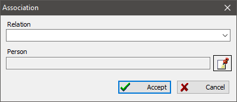

Associations (relations) store dedicated references from one person to others. Those references pick specific family or social bonds.
For example, it is handy to store a reference to a godparent as an association. Also, you can use associations to emphasize friends and other relationships, which you cannot define as ties of blood (mother/father/child/brother/sister).
You add associations on the tab with the same name in the person edit dialog.

See also: Person.